Nemocnica
Bürgerhospital
Sadrokartónové konštrukcie, revízne otvory a obklady stien a stropov v nemocnici Bürgerhospital, vo vstupnej hale aj na chodbách.

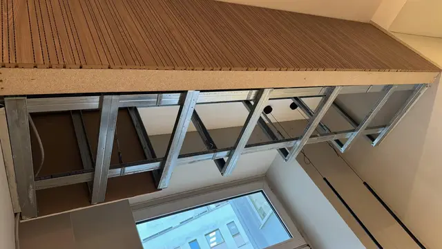


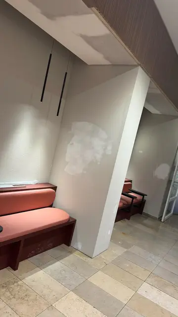
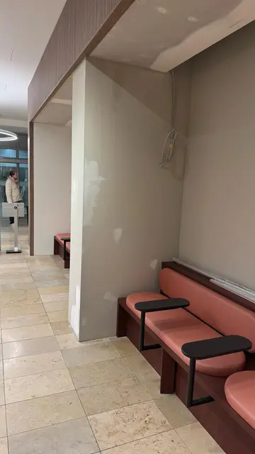
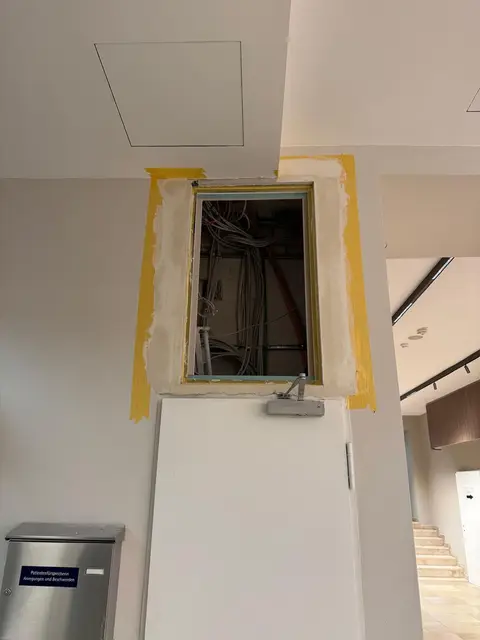
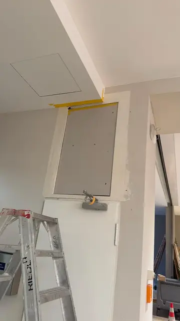
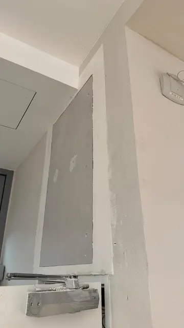
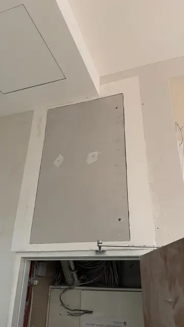


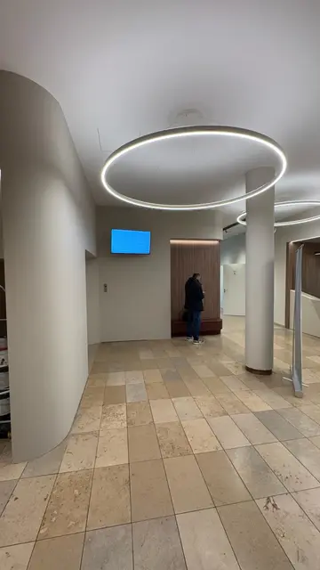
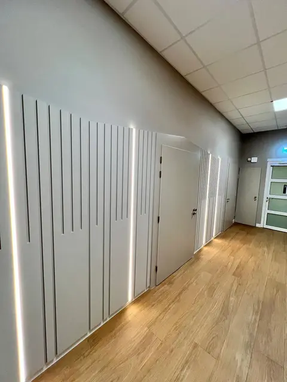

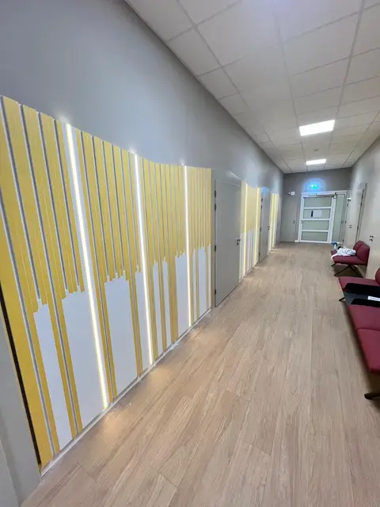
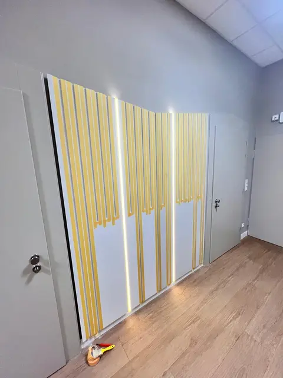
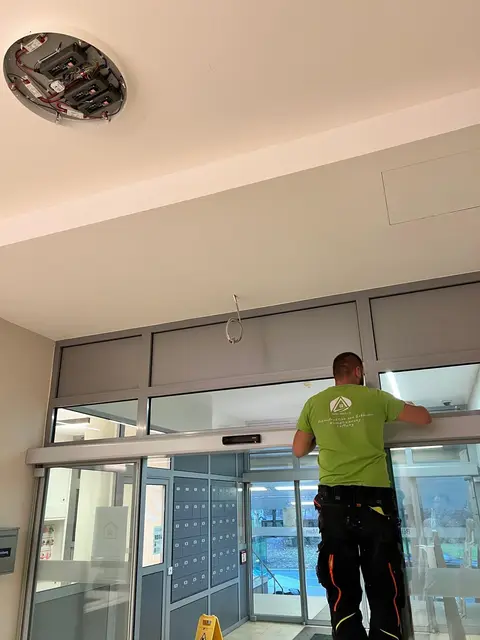
Ďalšie realizácie


Máte podobnú stavbu?
Napíšte nám rozsah prác, miesto a termín. Ozveme sa vám späť.